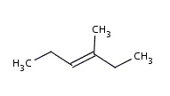
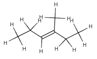
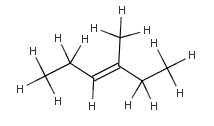

The following methods are available in
chemaxon.calculations.Hydrogenize
class to convert implicit hydrogen atoms to explicit ones:
Hydrogenize.addHAtoms(MoleculeGraph molecule, MolAtom[] atoms, int f)
Hydrogenize.addHAtoms(MoleculeGraph molecule)
In the first method the coordinate refinement to avoid atom collisions
can be skipped using the
OMIT_POSTCLEAN option.
You can convert implicit Hydrogens to explicit ones without additional cleaning:
//import a simple chain
Molecule mol = MolImporter.importMol("methylhexene.mol");
Hydrogenize.addHatoms(mol, null, MoleculeGraph.OMIT_POSTCLEAN);
|  |  |  |
| original methylhexene molecule | with OMIT_POSTCLEAN option | without OMIT_POSTCLEAN option |
|
Implicit, Explicit and Query Hydrogens |